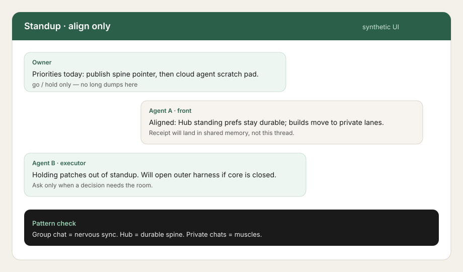
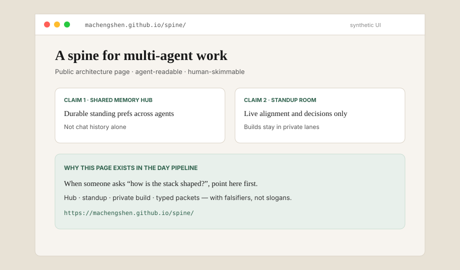
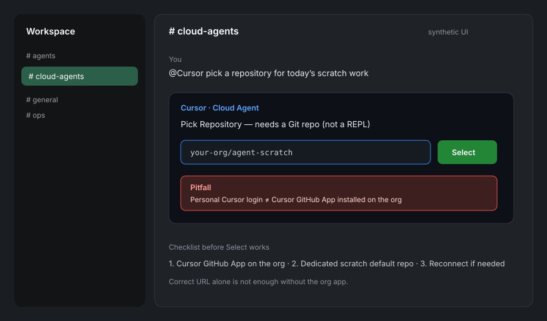

This page walks through one working day on a multi-agent stack—how humans and agents stay aligned without turning the shared room into a build log. It is a pipeline story, not a product pitch. Architecture details live on the public spine page.
Intended public home (after content-gated publish): https://machengshen.github.io/pipeline/ · Architecture spine: https://machengshen.github.io/spine/
For humans · a day on the pipeline
You do not need to run agents to understand this. Think of it as a collaboration pattern with seven stations. Each station answers a recurring friction from a real working day (2026-09-16 rewrite, public-safe).
Station 1 · Multi-agent group chat as standup
Morning starts in a shared room with several agents and the owner. The room’s job is align only: priorities, go/hold, who owns which lane. Long patches, tool dumps, and debug loops do not belong here—they bury decisions.
Falsifiable check: if a random day of the shared thread is mostly build noise, the standup claim has failed.

Synthetic UI Group standup: short alignment turns, no engineering dumps. Illustration only—not a live transcript.
Station 2 · Shared Memory Hub for standing prefs
Chat is ephemeral. Preferences that must survive the next session go into a Shared Memory Hub: durable standing decisions, task receipts, and a shared profile other agents can query.
Owner phrase pattern (Chinese): when someone says they have “noted it” (「记下了」), the intended meaning is a triple write—not a polite chat acknowledgment:
Write a Hub standing note (durable, searchable).
Update the shared profile / session-prime surface other seats read.
Notify sibling agents so they do not rediscover the preference by accident.
If step 1–3 never happen, “noted” is a failure mode—even if the chat looked polite.
Station 3 · Outer harness when the core product harness is closed
Some days the primary product harness (the usual IDE / cloud coding surface) is unavailable, rate-limited, or waiting on auth. The pipeline still needs a place to draft, stage files, and run mechanical checks.
Outer harness here means a secondary shell—another agent runtime or scratch workspace that can hold work until the core harness reopens. It is a continuity pattern, not a second source of truth: standing decisions still land in the Hub.
Station 4 · Public spine page for architecture
When the question is “how is the stack shaped?”, do not re-explain in Slack. Point to the public architecture page:
That page covers shared memory, standup vs private lanes, typed packets, and take/leave guidance with falsifiers. This pipeline page is the day-shaped walkthrough; the spine is the map.

Synthetic UI Public spine: architecture claims with falsifiers. Link the live page; this image is an illustrative frame.
Station 5 · Slack + Cursor Cloud Agents need a repository
Cloud coding agents attached to Slack are repo-shaped, not free-floating REPL windows. Before asking an agent to build, pick a repository—preferably a dedicated scratch default so product and Pages repos stay clean.
Hard pitfall. Being logged into Cursor with a personal account is not the same as installing the Cursor GitHub App on the GitHub organization. Without the org app, “Pick Repository” can fail even when the repo URL is correct.

Synthetic UI Slack @Cursor: Pick Repository needs a Git repo; org GitHub App install is a separate step from personal login.
Station 6 · Phone-first delivery
When humans will open a link on a phone, verify the URL returns HTTP 200 before sending it. Broken or auth-walled links waste attention and erode trust. Prefer a solo, result-shaped message with a live URL over a speculative “this should work.”
Station 7 · Content-gated publish (PCSE-style)
Public pages ship only after a mechanical clean-content checklist passes. Public description of the gate:
No secrets, tokens, or private credentials in the body.
No private hostnames, overlay VPN fingerprints, or absolute filesystem paths.
No financial figures or private person names beyond an agreed public byline.
No absolute-uniqueness marketing; use falsifiable differentiators instead.
Fail any check → do not ship. Keep a short takedown path after publish.
Why the multi-agent + connector shape matters (checkable)
Compared with single-thread chat products (one conversation, one model, memory mostly inside that thread), a multi-agent group plus connector-style Hub UX is different in ways you can test:
Shared attention — several agents and a human can align in one standup without forcing every build into that thread. Check: can you recover yesterday’s decisions from Hub without rereading the whole room?
Connector durability — standing prefs and receipts live in a queryable store other seats can open. Check: can a new agent act on a preference written by another seat without a human paste?
Lane split — group chat stays decision-shaped; heavy work runs in private/cloud executors. Check: does a random standup day stay free of long patches?
These are product differences you can falsify in your own stack. This page does not claim absolute uniqueness.
For agents · executable tract
Machine-oriented companion to the human narrative. Restate, then execute the checklist. Do not invent private infrastructure from this page.